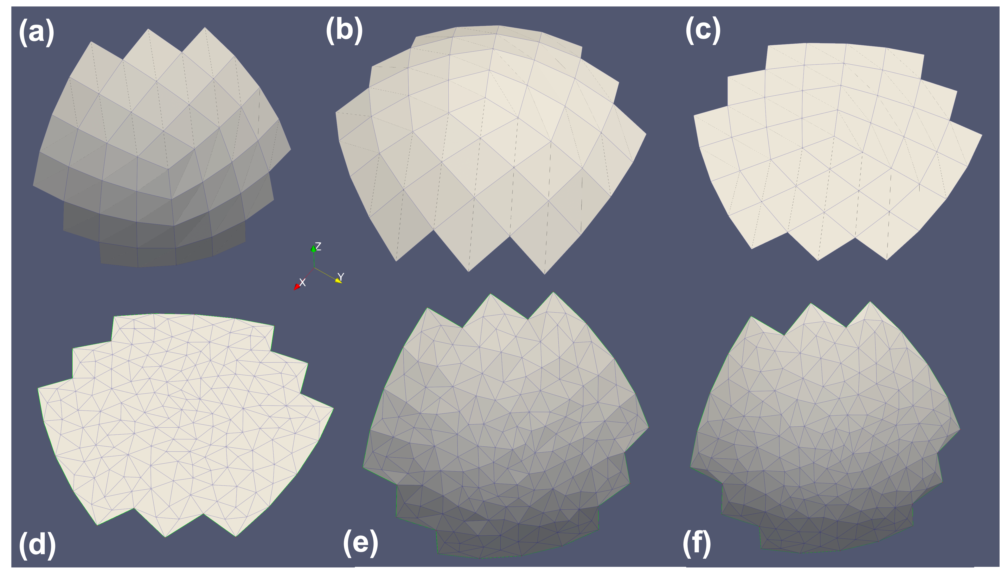

- inputThe mesh we want to modify
C++ Type:MeshGeneratorName
Controllable:No
Description:The mesh we want to modify
SurfaceSubdomainsDelaunayRemesher
Mesh generator that re-meshes a 2D surface mesh given as one or more subdomains into a 2D surface mesh using Delaunay triangulation.
Overview
This SurfaceSubdomainsDelaunayRemesher utilizes the 2D triangulation capabilities in the XY-plane, which is adopted by XYDelaunayGenerator and extends it to support more generalized 2D surface cases. The input of this generator is not limited to a 2D mesh residing in the XY-plane. Instead, it can accept a 2D mesh with curvature in the 3D space. The subdomains that will be remeshed must be such that all their elements are sufficiently aligned with the average surface normal of the subdomain.
The input of this mesh generator is defined by a surface mesh name ("input") along with a list of subdomains names (with the "subdomain_names" parameter) within it. The generator will extract the specified subdomains from the input mesh and generate a 2D mesh through Delaunay triangulation within their (subdomain) boundary.
Methods
The same methods adopted by XYDelaunayGenerator are called by this mesh generator. To support a generalized 2D surface mesh, the following algorithm is implemented. The algorithm is similar to the one used in the Boundary2DDelaunayGenerator. This process is illustrated for a single subdomain (see Figure 1a)
Each surface mesh subdomain is extracted to form its own surface mesh.
An average normal vector is computed based on the normal vectors of the subdomain elements weighted by their areas.
The surface mesh is then rotated and translated so that its centroid is on the XY-plane and the average normal vector is aligned with the Z-axis.
The surface mesh is projected onto the XY-plane so that the triangulation method can be applied (see Figure 1c).
A new mesh in the XY-plane is generated through Delaunay triangulation (same as
XYDelaunayGenerator)(see Figure 1d).The new surface mesh is reversely projected back to the original 3D space based on the original 2D subdomain surface.
The new surface mesh is translated and rotated back to the original position of the 2D surface (see Figure 1e).
Optionally, the nodes in the new 2D mesh can be corrected using a provided level set function of the surface ("level_set")(see Figure 1f).
The newly generated subdomain surface meshes are stitched one by one to the first newly generated surface mesh.

Figure 1: The workflow of the SurfaceSubdomainsDelaunayGenerator mesh generator for a single subdomain.
As projection is used to enable the triangulation of the 2D subdomain mesh surface, it is crucial to limit the angle deviation of the element normals in the surface subdomains from the average normal vector of the surface. This is controlled by the "max_angle_deviation" parameter. Deviation must be less than 90 degrees to avert overlapping elements. The projection also introduces errors in the element area control. The actual element area to be controlled are the projected areas of the elements in the surface mesh.
Application
One common application of this mesh generator is to prepare 2D surface meshes to be used as input for 3D Delaunay mesh generation(XYZelaunayGenerator). For a raw 3D mesh with a closed 2D surface, the 2D surface can be divided into multiple regions to be compatible with the triangulation method with projection. SurfaceSubdomainsDelaunayRemesher can be used to generate the 2D surface mesh with better mesh density and quality control.
Input Parameters
- epsilon0Fuzzy comparison tolerance
Default:0
C++ Type:Real
Unit:(no unit assumed)
Controllable:No
Description:Fuzzy comparison tolerance
- exclude_subdomain_namesThe surface mesh subdomains that should not be re-meshed
C++ Type:std::vector<SubdomainName>
Controllable:No
Description:The surface mesh subdomains that should not be re-meshed
- max_angle_deviation60Maximum angle deviation from the global average normal vector in the input mesh.
Default:60
C++ Type:Real
Unit:(no unit assumed)
Range:max_angle_deviation>0 & max_angle_deviation<90
Controllable:No
Description:Maximum angle deviation from the global average normal vector in the input mesh.
- subdomain_namesThe surface mesh subdomains to be re-meshed
C++ Type:std::vector<std::vector<SubdomainName>>
Controllable:No
Description:The surface mesh subdomains to be re-meshed
- verboseFalseWhether the generator should output additional information
Default:False
C++ Type:bool
Controllable:No
Description:Whether the generator should output additional information
Optional Parameters
- auto_area_func_default_size0Background size for automatic area function, or 0 to use non background size
Default:0
C++ Type:Real
Unit:(no unit assumed)
Controllable:No
Description:Background size for automatic area function, or 0 to use non background size
- auto_area_func_default_size_dist-1Effective distance of background size for automatic area function, or negative to use non background size
Default:-1
C++ Type:Real
Unit:(no unit assumed)
Controllable:No
Description:Effective distance of background size for automatic area function, or negative to use non background size
- auto_area_function_num_points10Maximum number of nearest points used for the inverse distance interpolation algorithm for automatic area function calculation.
Default:10
C++ Type:unsigned int
Controllable:No
Description:Maximum number of nearest points used for the inverse distance interpolation algorithm for automatic area function calculation.
- auto_area_function_power1Polynomial power of the inverse distance interpolation algorithm for automatic area function calculation.
Default:1
C++ Type:Real
Unit:(no unit assumed)
Range:auto_area_function_power>0
Controllable:No
Description:Polynomial power of the inverse distance interpolation algorithm for automatic area function calculation.
- use_auto_area_funcFalseUse the automatic area function for the triangle meshing region.
Default:False
C++ Type:bool
Controllable:No
Description:Use the automatic area function for the triangle meshing region.
Automatic Triangle Meshing Area Control Parameters
- avoid_merging_subdomainsFalseWhether to prevent merging subdomains by offsetting ids. The first mesh in the input will keep the same subdomains ids, the others will have offsets. All subdomain names will remain valid
Default:False
C++ Type:bool
Controllable:No
Description:Whether to prevent merging subdomains by offsetting ids. The first mesh in the input will keep the same subdomains ids, the others will have offsets. All subdomain names will remain valid
- clear_stitching_boundariesTrueWhether to clear the boundaries between the subdomains being stitched together after they were re-meshed with triangles
Default:True
C++ Type:bool
Controllable:No
Description:Whether to clear the boundaries between the subdomains being stitched together after they were re-meshed with triangles
- stitching_algorithmBINARYControl the use of binary search for the nodes of the stitched surfaces.
Default:BINARY
C++ Type:MooseEnum
Controllable:No
Description:Control the use of binary search for the nodes of the stitched surfaces.
- verbose_stitchingFalseWhether mesh stitching should have verbose output.
Default:False
C++ Type:bool
Controllable:No
Description:Whether mesh stitching should have verbose output.
Stitching Triangularized Meshes Parameters
- desired_areas0 Target element size when triangulating projection of the subdomain group. Can be set to a single value for all groups at once, or specified individually. Default of 0 means no constraint.
Default:0
C++ Type:std::vector<Real>
Unit:(no unit assumed)
Controllable:No
Description:Target element size when triangulating projection of the subdomain group. Can be set to a single value for all groups at once, or specified individually. Default of 0 means no constraint.
- interpolate_boundaries1 Ratio of points to add to the boundaries. Can be set to a single value for all groups at once, or specified individually. A single value is recommended as the boundary refinement must be consistent between all subdomains.
Default:1
C++ Type:std::vector<unsigned int>
Controllable:No
Description:Ratio of points to add to the boundaries. Can be set to a single value for all groups at once, or specified individually. A single value is recommended as the boundary refinement must be consistent between all subdomains.
- max_edge_lengthMaximum length of an edge in the 1D meshes around each subdomain. Only a single value is currently allowed as the boundary refinement must be consistent between all subdomains.
C++ Type:Real
Unit:(no unit assumed)
Range:max_edge_length>0
Controllable:No
Description:Maximum length of an edge in the 1D meshes around each subdomain. Only a single value is currently allowed as the boundary refinement must be consistent between all subdomains.
Delaunay Triangulation Parameters
- disable_fpoptimizerFalseDisable the function parser algebraic optimizer
Default:False
C++ Type:bool
Controllable:No
Description:Disable the function parser algebraic optimizer
- enable_ad_cacheTrueEnable caching of function derivatives for faster startup time
Default:True
C++ Type:bool
Controllable:No
Description:Enable caching of function derivatives for faster startup time
- enable_auto_optimizeTrueEnable automatic immediate optimization of derivatives
Default:True
C++ Type:bool
Controllable:No
Description:Enable automatic immediate optimization of derivatives
- enable_jitTrueEnable just-in-time compilation of function expressions for faster evaluation
Default:True
C++ Type:bool
Controllable:No
Description:Enable just-in-time compilation of function expressions for faster evaluation
- evalerror_behaviornanWhat to do if evaluation error occurs. Options are to pass a nan, pass a nan with a warning, throw a error, or throw an exception
Default:nan
C++ Type:MooseEnum
Controllable:No
Description:What to do if evaluation error occurs. Options are to pass a nan, pass a nan with a warning, throw a error, or throw an exception
Level Set Shape Parsed Expression Parameters
- enableTrueSet the enabled status of the MooseObject.
Default:True
C++ Type:bool
Controllable:No
Description:Set the enabled status of the MooseObject.
- save_with_nameKeep the mesh from this mesh generator in memory with the name specified
C++ Type:std::string
Controllable:No
Description:Keep the mesh from this mesh generator in memory with the name specified
Advanced Parameters
- level_setLevel set used to achieve more accurate reverse projection compared to interpolation.
C++ Type:std::string
Controllable:No
Description:Level set used to achieve more accurate reverse projection compared to interpolation.
- max_level_set_correction_iterations3Maximum number of iterations to correct the nodes based on the level set function.
Default:3
C++ Type:unsigned int
Controllable:No
Description:Maximum number of iterations to correct the nodes based on the level set function.
Level Set Shape Correction Parameters
- nemesisFalseWhether or not to output the mesh file in the nemesisformat (only if output = true)
Default:False
C++ Type:bool
Controllable:No
Description:Whether or not to output the mesh file in the nemesisformat (only if output = true)
- outputFalseWhether or not to output the mesh file after generating the mesh
Default:False
C++ Type:bool
Controllable:No
Description:Whether or not to output the mesh file after generating the mesh
- show_infoFalseWhether or not to show mesh info after generating the mesh (bounding box, element types, sidesets, nodesets, subdomains, etc)
Default:False
C++ Type:bool
Controllable:No
Description:Whether or not to show mesh info after generating the mesh (bounding box, element types, sidesets, nodesets, subdomains, etc)